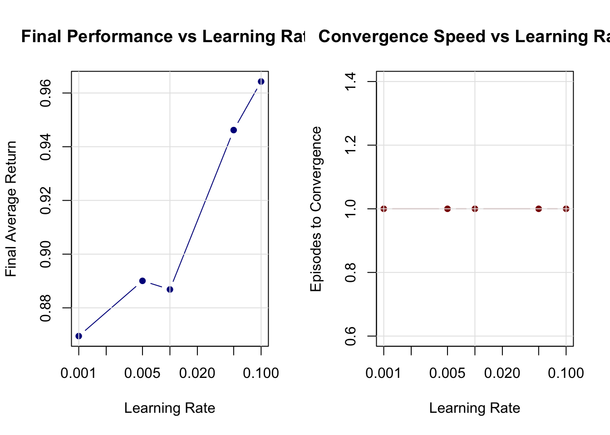
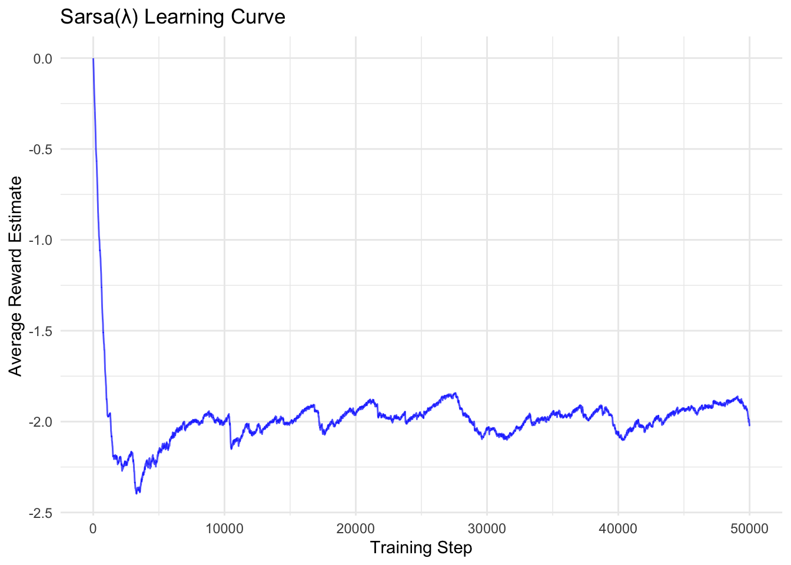

Chapter 11 Function Approximation And Feature Engineering
Reinforcement Learning has evolved dramatically from its tabular origins, where algorithms stored explicit values for every state-action pair. Modern deep RL agents navigate vast continuous environments that would be impossible to represent in lookup tables. This transformation rests on a crucial foundation that bridges tabular methods and neural networks: classical function approximation. Understanding linear function approximation, basis functions, and feature engineering illuminates why deep RL succeeds, helps diagnose failures, and guides the design of effective agent representations.
The curse of dimensionality makes tabular RL impractical for realistic problems. Consider a robot with ten continuous state variables, each discretized into just 100 bins—the resulting state space contains 10^20 states, far exceeding what any computer could store. Function approximation solves this by learning parameterized functions that generalize knowledge across similar states. This generalization creates both opportunities and challenges, introducing a fundamental tension between discrimination (the ability to distinguish important differences) and generalization (the capacity to share knowledge) that shapes every modern RL algorithm.
This appendix provides the conceptual bridge between simple tabular methods and sophisticated neural networks. We explore how to engineer effective features, examine the mathematical principles governing linear function approximation, and investigate classical basis functions that remain relevant in contemporary RL systems.
11.1 Feature Engineering and State Representation
The quality of state representation often determines the success or failure of RL algorithms more than the choice of learning method itself. Raw environmental observations—sensor readings, pixel values, or game states—rarely provide the optimal format for learning. Effective feature engineering transforms these high-dimensional, noisy inputs into compact, informative representations that accelerate learning and improve policy performance.
Consider a autonomous vehicle navigating city streets. Raw sensor data might include thousands of LIDAR points, camera pixels, and instrument readings. However, the agent’s success depends on recognizing higher-level patterns: the presence of pedestrians, the curvature of the road ahead, or the relative positions of nearby vehicles. Good features capture these essential abstractions while discarding irrelevant details like the exact shade of a building or the precise timestamp of the observation.
11.1.1 The Discrimination vs. Generalization Tradeoff
At the heart of feature design lies a fundamental tension that permeates all of machine learning but becomes particularly acute in RL. Discrimination enables the agent to recognize when seemingly similar states require different actions. A chess program must distinguish between positions that appear nearly identical but have vastly different strategic implications. Generalization allows the agent to apply lessons learned in one context to new, similar situations. The same chess program should recognize that tactical patterns transfer across different board positions.
Mathematically, we seek to approximate the true value function V*(s) using a parameterized function V_θ(s). In the linear case, this takes the form:
V_θ(s) = φ(s)^T θ = Σ_{i=1}^d φ_i(s) θ_i
The feature vector φ(s) determines what information the agent can access about state s, while the weight vector θ contains the learned parameters. The approximation quality depends critically on how well the feature space can represent the true value function. The theoretical limit of linear approximation is given by the projection error |V* - ΠV*|^2, where Π projects onto the space spanned by the features.
This mathematical framework reveals why feature selection is so crucial. No amount of sophisticated learning can overcome fundamentally inadequate features. If the feature vector φ(s) cannot distinguish between states with different optimal values, the agent cannot learn the correct policy regardless of the learning algorithm used.
11.1.2 Principles of Effective Feature Design
Successful RL features often encode temporal structure, highlighting how the environment evolves over time. In physical systems, this means capturing both position and velocity. In financial applications, it involves representing price trends alongside current values. The key insight is that optimal actions depend not just on the current state, but on the trajectory that led to it.
Features should focus on action-relevant information while filtering out distracting details. A poker-playing agent needs to represent card values, betting patterns, and opponent tendencies, but the color of the cards or the time of day are irrelevant. This filtering process requires domain knowledge and careful analysis of what information actually influences optimal decision-making.
Hierarchical structure in features enables agents to reason at multiple levels of abstraction. A household robot benefits from features that represent both fine-grained spatial information (“near the kitchen counter”) and higher-level semantic concepts (“in the cooking area”). This hierarchical representation supports both precise control and strategic planning.
11.2 Mathematical Foundations of Linear Function Approximation
Linear function approximation provides the theoretical foundation for understanding more complex methods. Its mathematical simplicity enables rigorous analysis while its computational efficiency makes it practical for many applications. Most importantly, the insights gained from linear methods transfer directly to neural network approaches.
11.2.1 Linear Value Functions and Their Properties
The linear model represents value functions as weighted combinations of features:
V_θ(s) = φ(s)^T θ Q_θ(s,a) = φ(s,a)^T θ
This representation has several appealing properties. The gradient with respect to parameters is simply the feature vector itself: ∇_θ V_θ(s) = φ(s). This makes gradient-based learning algorithms straightforward to implement and analyze. The update rules become linear in the features, ensuring computational efficiency even for high-dimensional feature spaces.
Linear models also provide theoretical guarantees. Under certain conditions, they converge to the best possible approximation within the representational constraints. This convergence behavior can be analyzed using techniques from linear algebra and optimization theory, providing insights that remain valuable when working with more complex function approximators.
11.2.2 Temporal Difference Learning with Linear Approximation
The temporal difference learning framework adapts naturally to linear function approximation. The TD(0) update rule becomes:
θ_{t+1} ← θ_t + α [R_{t+1} + γ V_θ(S_{t+1}) - V_θ(S_t)] φ(S_t)
This update adjusts the weight vector to reduce the temporal difference error for the observed transition. Since all states share the same parameter vector θ, each update influences value estimates throughout the entire state space. The degree of influence depends on the similarity of feature vectors between states.
For action-value learning, the Q-learning update becomes:
θ_{t+1} ← θ_t + α [R_{t+1} + γ max_{a’} Q_θ(S_{t+1}, a’) - Q_θ(S_t, A_t)] φ(S_t, A_t)
These updates have intuitive interpretations. When the agent discovers that a state is more valuable than expected (positive TD error), it increases the weights corresponding to active features. States with similar feature representations receive proportional increases in their estimated values.
11.2.3 The Deadly Triad and Stability Concerns
Linear function approximation with on-policy TD learning enjoys strong convergence guarantees, but stability becomes problematic under certain combinations of conditions. The infamous “deadly triad” consists of off-policy learning (updating from data generated by a different policy), function approximation (using parameterized models rather than tabular representations), and bootstrapping (updating estimates based on other estimates rather than complete returns).
This instability isn’t merely a theoretical curiosity—it represents a fundamental challenge that motivated much of the research leading to modern deep RL algorithms. Techniques like experience replay, target networks, and careful exploration strategies all address various aspects of this stability problem. Understanding the deadly triad provides crucial intuition for diagnosing and fixing problems in deep RL systems.
11.3 Classical Basis Function Methods
Basis functions provide systematic approaches to feature construction, bridging the gap between hand-crafted features and automatically learned representations. These classical methods remain relevant both as standalone techniques for appropriate problems and as conceptual frameworks for understanding more sophisticated approaches.
11.3.1 Coarse Coding: Overlapping Receptive Fields
Coarse coding represents the state space using overlapping binary features, where each feature corresponds to a region or “receptive field.” A feature activates when the state falls within its designated region and remains inactive otherwise. The power of this approach lies in the overlapping structure—nearby states activate similar sets of features, creating natural generalization.
The degree of overlap controls the smoothness of the learned function. Greater overlap produces broader generalization but reduces discrimination. The optimal balance depends on the problem structure and the complexity of the target function. Coarse coding mimics biological neural representations, where individual neurons respond to ranges of stimuli with overlapping tuning curves.
# Load required libraries
library(ggplot2)
library(ggforce)
library(dplyr)
# Coarse Coding Implementation
create_coarse_coder <- function(state_dims, num_features, overlap_factor = 1.5, seed = 123) {
set.seed(seed)
# Generate random centers uniformly across state space
centers <- data.frame(
x = runif(num_features, 0, state_dims[1]),
y = runif(num_features, 0, state_dims[2])
)
# Calculate radius to ensure appropriate overlap
avg_spacing <- sqrt(prod(state_dims) / num_features)
radius <- overlap_factor * avg_spacing / 2
# Function to compute binary feature vector for given state
encode <- function(state) {
state_vec <- as.numeric(state)
distances <- sqrt((centers$x - state_vec[1])^2 + (centers$y - state_vec[2])^2)
features <- as.numeric(distances <= radius)
return(features)
}
# Visualization function
visualize <- function(query_state = NULL) {
# Determine active features for query state
active_features <- NULL
active_indices <- integer(0)
if (!is.null(query_state)) {
active_features <- encode(query_state)
active_indices <- which(active_features == 1)
}
# Create base plot
p <- ggplot() +
coord_fixed(xlim = c(0, state_dims[1]), ylim = c(0, state_dims[2]))
# Add all receptive fields (inactive)
p <- p + geom_circle(
data = centers,
aes(x0 = x, y0 = y, r = radius),
color = "grey70", fill = "grey90", alpha = 0.3, linetype = "dashed"
)
# Highlight active receptive fields
if (length(active_indices) > 0) {
p <- p + geom_circle(
data = centers[active_indices, ],
aes(x0 = x, y0 = y, r = radius),
color = "#e41a1c", fill = "#e41a1c", alpha = 0.4, size = 1
)
}
# Add center points
p <- p + geom_point(
data = centers,
aes(x = x, y = y),
color = "grey40", size = 1.5, alpha = 0.8
)
# Add query state point
if (!is.null(query_state)) {
p <- p + geom_point(
aes(x = query_state[1], y = query_state[2]),
color = "#377eb8", size = 4, shape = 17
)
num_active <- length(active_indices)
subtitle <- paste(num_active, "of", num_features, "features active")
} else {
subtitle <- "Overlapping receptive fields"
}
p + labs(
title = "Coarse Coding",
subtitle = subtitle,
x = "State Dimension 1",
y = "State Dimension 2"
) +
theme_minimal(base_size = 12) +
theme(
panel.grid.minor = element_blank(),
panel.background = element_rect(fill = "white", color = NA)
)
}
return(list(
encode = encode,
visualize = visualize,
centers = centers,
radius = radius,
state_dims = state_dims,
num_features = num_features
))
}
# Example usage
coarse_coder <- create_coarse_coder(
state_dims = c(10, 10),
num_features = 50,
overlap_factor = 1.5
)
# Visualize with query state
print(coarse_coder$visualize(query_state = c(3.2, 7.8)))
11.3.2 Tile Coding: Structured Overlapping Grids
Tile coding, also known as CMAC (Cerebellar Model Articulation Controller), provides a more structured approach to creating overlapping features. Instead of random circular regions, tile coding partitions the state space using multiple offset grids called tilings. Each tiling covers the entire state space with non-overlapping rectangular tiles, but the tilings are offset from each other to create overlapping coverage.
For any given state, exactly one tile from each tiling will be active, ensuring a constant number of active features regardless of the state location. This property provides computational advantages and makes the learning dynamics more predictable. The offsets between tilings create fine-grained discrimination capability, while the tile sizes control the degree of generalization.
Tile coding’s rectangular structure creates asymmetric generalization that aligns with coordinate axes. This asymmetry is often desirable in control problems where different state dimensions represent distinct physical quantities with different units and scaling properties. A robot’s position and velocity, for example, should generalize differently along each dimension.
# Tile Coding Implementation
create_tile_coder <- function(state_low, state_high, num_tilings, tiles_per_dim) {
state_low <- as.numeric(state_low)
state_high <- as.numeric(state_high)
tiles_per_dim <- as.integer(tiles_per_dim)
if (length(state_low) != length(state_high)) {
stop("state_low and state_high must have same length")
}
if (any(tiles_per_dim <= 0)) {
stop("tiles_per_dim must be positive integers")
}
if (num_tilings <= 0) {
stop("num_tilings must be positive")
}
if (any(state_low >= state_high)) {
stop("Each element of state_low must be < state_high")
}
state_dims <- length(state_low)
state_range <- state_high - state_low
tile_widths <- state_range / tiles_per_dim
if (any(tile_widths <= 0)) {
stop("Invalid state range or tiles_per_dim leading to non-positive tile width")
}
# Generate offsets for each tiling
offsets <- array(0, dim = c(num_tilings, state_dims))
for (dim in 1:state_dims) {
offsets[, dim] <- (0:(num_tilings - 1)) * tile_widths[dim] / num_tilings
}
# Function to get indices of active tiles for given state
encode <- function(state) {
state_vec <- as.numeric(state)
if (length(state_vec) != state_dims) {
stop("State dimension mismatch")
}
if (any(!is.finite(state_vec))) {
stop("State contains non-finite values")
}
active_tiles <- vector("list", num_tilings)
for (t in 1:num_tilings) {
# Apply offset and compute tile indices
offset_state <- state_vec - state_low + offsets[t, ]
tile_indices <- floor(offset_state / tile_widths)
# Clip to valid range [0, tiles_per_dim - 1]
tile_indices <- pmax(0, pmin(tile_indices, tiles_per_dim - 1))
active_tiles[[t]] <- as.integer(tile_indices)
}
return(active_tiles)
}
# Visualization function (2D only)
visualize <- function(query_state = NULL) {
if (state_dims != 2) {
stop("Visualization only supports 2D state spaces")
}
# Fix: extract scalar limits for x and y
xlims <- c(state_low[1], state_high[1])
ylims <- c(state_low[2], state_high[2])
# Create base plot
p <- ggplot() +
coord_fixed(xlim = xlims, ylim = ylims, expand = FALSE)
# Generate colors for tilings
colors <- if (num_tilings <= 8) {
RColorBrewer::brewer.pal(num_tilings, "Set1")
} else {
rep(RColorBrewer::brewer.pal(8, "Set1"), length.out = num_tilings)
}
# Draw grid lines for each tiling
for (t in 1:num_tilings) {
color <- colors[t]
# Vertical lines
x_start <- state_low[1] - offsets[t, 1]
x_end <- state_high[1] + tile_widths[1]
x_lines <- seq(x_start, x_end, by = tile_widths[1])
valid_x <- x_lines[x_lines >= state_low[1] & x_lines <= state_high[1]]
if (length(valid_x) > 0 && all(is.finite(valid_x))) {
p <- p + geom_vline(
xintercept = valid_x,
color = color,
alpha = 0.7,
linetype = "dashed",
size = 0.5
)
}
# Horizontal lines
y_start <- state_low[2] - offsets[t, 2]
y_end <- state_high[2] + tile_widths[2]
y_lines <- seq(y_start, y_end, by = tile_widths[2])
valid_y <- y_lines[y_lines >= state_low[2] & y_lines <= state_high[2]]
if (length(valid_y) > 0 && all(is.finite(valid_y))) {
p <- p + geom_hline(
yintercept = valid_y,
color = color,
alpha = 0.7,
linetype = "dashed",
size = 0.5
)
}
}
# Highlight active tiles for query state
if (!is.null(query_state)) {
query_state <- as.numeric(query_state)
if (length(query_state) != 2 || any(!is.finite(query_state))) {
stop("query_state must be a 2D finite numeric vector")
}
active_tiles_indices <- encode(query_state)
rect_data_list <- vector("list", num_tilings)
for (t in 1:num_tilings) {
tile_indices <- active_tiles_indices[[t]]
# Reconstruct lower-left corner of tile in world coordinates
tile_x <- state_low[1] - offsets[t, 1] + tile_indices[1] * tile_widths[1]
tile_y <- state_low[2] - offsets[t, 2] + tile_indices[2] * tile_widths[2]
rect_data_list[[t]] <- data.frame(
tiling = t,
xmin = tile_x,
xmax = tile_x + tile_widths[1],
ymin = tile_y,
ymax = tile_y + tile_widths[2]
)
}
all_rects <- do.call(rbind, rect_data_list)
# Ensure all values are finite
if (!all(is.finite(as.matrix(all_rects[, c("xmin", "xmax", "ymin", "ymax")])))) {
warning("Non-finite tile coordinates detected; skipping highlighting")
} else {
p <- p + geom_rect(
data = all_rects,
aes(xmin = xmin, xmax = xmax, ymin = ymin, ymax = ymax),
fill = colors[all_rects$tiling],
alpha = 0.4,
color = colors[all_rects$tiling],
size = 1.2
)
}
# Mark query state
p <- p + geom_point(
aes(x = query_state[1], y = query_state[2]),
color = "black", size = 4, shape = 17
)
subtitle <- paste(num_tilings, "active tiles (one per tiling)")
} else {
subtitle <- paste(num_tilings, "overlapping tilings")
}
p + labs(
title = "Tile Coding",
subtitle = subtitle,
x = "State Dimension 1",
y = "State Dimension 2"
) +
theme_minimal(base_size = 12) +
theme(
panel.grid.minor = element_blank(),
panel.background = element_rect(fill = "white", color = NA)
)
}
return(list(
encode = encode,
visualize = visualize,
state_low = state_low,
state_high = state_high,
num_tilings = num_tilings,
tiles_per_dim = tiles_per_dim,
tile_widths = tile_widths,
offsets = offsets
))
}
# Example usage
tile_coder <- create_tile_coder(
state_low = c(0, 0),
state_high = c(10, 10),
num_tilings = 4,
tiles_per_dim = c(5, 5)
)
# Visualize with query state
print(tile_coder$visualize(query_state = c(3.2, 7.8)))
11.3.3 Radial Basis Functions: Smooth Continuous Features
Radial Basis Functions represent a fundamentally different approach to feature construction. Instead of binary activations, RBFs provide smooth, continuous responses that depend on the distance from fixed center points. The most common form uses Gaussian functions:
φ_i(s) = exp(-||s - c_i||^2 / (2σ_i^2))
Here c_i represents the center of the i-th RBF, while σ_i controls its width or bandwidth. Unlike the sharp boundaries of tile coding or coarse coding, RBFs create smooth activation landscapes that vary continuously with state changes. This smoothness often produces more stable learning dynamics and can lead to better generalization in certain domains.
The width parameter σ plays a crucial role in controlling the locality of influence. Narrow RBFs (small σ) create peaked functions that provide high discrimination but limited generalization. Wide RBFs (large σ) create broad functions that generalize extensively but may lack the discrimination needed for complex tasks. The optimal choice depends on the smoothness of the target function and the density of training data.
RBF networks possess powerful theoretical properties. They are universal approximators, meaning they can represent any continuous function to arbitrary accuracy given sufficient basis functions. The placement of centers and selection of widths determine the network’s effectiveness. Centers can be positioned on regular grids, placed randomly, or adapted during learning using techniques like k-means clustering on experienced states.
# Load additional libraries for RBF network
library(ggplot2)
library(viridis)
library(RColorBrewer)
# Radial Basis Function Network Implementation
create_rbf_network <- function(centers, widths) {
# Convert centers to matrix format
if (is.data.frame(centers)) {
centers <- as.matrix(centers)
}
if (!is.matrix(centers) || ncol(centers) != 2) {
stop("centers must be a 2-column matrix or data frame")
}
n_rbf <- nrow(centers)
# Handle scalar or vector widths
if (length(widths) == 1) {
widths <- rep(widths, n_rbf)
} else if (length(widths) != n_rbf) {
stop("length of widths must be 1 or equal to number of centers")
}
# Function to compute RBF activations for given state
encode <- function(state) {
state_vec <- as.numeric(state)
if (length(state_vec) != 2) {
stop("State must be 2-dimensional for current implementation")
}
if (any(!is.finite(state_vec))) {
stop("State contains non-finite values")
}
state_mat <- matrix(rep(state_vec, n_rbf), nrow = n_rbf, byrow = TRUE)
distances_sq <- rowSums((centers - state_mat)^2)
activations <- exp(-distances_sq / (2 * widths^2))
return(activations)
}
# Function to create adaptive RBF centers using k-means-like placement
create_adaptive_centers <- function(state_dims, n_centers, n_samples = 1000, seed = 42) {
set.seed(seed)
# Generate random samples from state space [0, state_dims[1]] x [0, state_dims[2]]
samples <- data.frame(
x = runif(n_samples, 0, state_dims[1]),
y = runif(n_samples, 0, state_dims[2])
)
# Initialize centers randomly
centers_df <- samples[sample(nrow(samples), n_centers), , drop = FALSE]
centers_mat <- as.matrix(centers_df)
for (iter in 1:50) {
# Compute distances from all samples to all centers
# Efficient vectorized approach
dists <- outer(samples$x, centers_mat[,1], FUN = function(a,b) (a - b)^2) +
outer(samples$y, centers_mat[,2], FUN = function(a,b) (a - b)^2)
assignments <- max.col(-dists) # equivalent to which.min per row
# Update centers
new_centers <- centers_mat
for (k in 1:n_centers) {
idx <- which(assignments == k)
if (length(idx) > 0) {
new_centers[k, ] <- colMeans(samples[idx, , drop = FALSE])
}
}
# Check convergence
if (sum((new_centers - centers_mat)^2) < 1e-6) break
centers_mat <- new_centers
}
return(centers_mat)
}
# Visualization function for activation landscape
visualize_activation_landscape <- function(state_dims, resolution = 100) {
# Create evaluation grid
x_seq <- seq(0, state_dims[1], length.out = resolution)
y_seq <- seq(0, state_dims[2], length.out = resolution)
grid_df <- expand.grid(x = x_seq, y = y_seq)
# Compute total activation at each point
grid_df$activation <- apply(grid_df, 1, function(point) {
sum(encode(point))
})
# Prepare center data frame with explicit column names
center_df <- data.frame(
x = centers[, 1],
y = centers[, 2]
)
# Create visualization
p <- ggplot(grid_df, aes(x = x, y = y, fill = activation)) +
geom_raster(interpolate = TRUE) +
geom_contour(aes(z = activation), color = "white", alpha = 0.4, size = 0.3) +
geom_point(
data = center_df,
aes(x = x, y = y),
color = "white", shape = 4, size = 3, stroke = 1.5,
inherit.aes = FALSE
) +
scale_fill_viridis_c(name = "Total\nActivation", option = "plasma") +
coord_fixed(xlim = c(0, state_dims[1]), ylim = c(0, state_dims[2]), expand = FALSE) +
labs(
title = "RBF Network: Combined Activation Landscape",
subtitle = paste("White crosses indicate", n_rbf, "RBF centers"),
x = "State Dimension 1",
y = "State Dimension 2"
) +
theme_minimal(base_size = 12) +
theme(
panel.grid = element_blank(),
panel.background = element_rect(fill = "white", color = NA)
)
return(p)
}
# Visualization function for individual RBFs
visualize_individual_rbfs <- function(state_dims, resolution = 50) {
# Determine subplot layout
n_cols <- ceiling(sqrt(n_rbf))
n_rows <- ceiling(n_rbf / n_cols)
# Create evaluation grid
x_seq <- seq(0, state_dims[1], length.out = resolution)
y_seq <- seq(0, state_dims[2], length.out = resolution)
grid_df <- expand.grid(x = x_seq, y = y_seq)
# Prepare data for all RBFs
all_rbf_data <- vector("list", n_rbf)
for (i in 1:n_rbf) {
# Compute activation for this RBF only
state_mat <- matrix(rep(centers[i, ], nrow(grid_df)), nrow = nrow(grid_df), byrow = TRUE)
distances_sq <- rowSums((grid_df - state_mat)^2)
activations <- exp(-distances_sq / (2 * widths[i]^2))
rbf_data <- grid_df
rbf_data$activation <- activations
rbf_data$rbf_id <- i
rbf_data$rbf_label <- paste0("RBF ", i, " (σ=", round(widths[i], 1), ")")
all_rbf_data[[i]] <- rbf_data
}
# Combine all data
combined_data <- do.call(rbind, all_rbf_data)
# Add center information with named columns
center_data <- data.frame(
x = centers[, 1],
y = centers[, 2],
rbf_id = 1:n_rbf,
rbf_label = paste0("RBF ", 1:n_rbf, " (σ=", round(widths, 1), ")")
)
# Create faceted plot
p <- ggplot(combined_data, aes(x = x, y = y, fill = activation)) +
geom_raster(interpolate = TRUE) +
geom_point(
data = center_data,
aes(x = x, y = y),
color = "white", shape = 4, size = 2, stroke = 1,
inherit.aes = FALSE
) +
facet_wrap(~ rbf_label, ncol = n_cols) +
scale_fill_viridis_c(option = "plasma", name = "Activation") +
coord_fixed(expand = FALSE) +
labs(
title = "Individual RBF Activations",
x = "State Dimension 1",
y = "State Dimension 2"
) +
theme_minimal(base_size = 10) +
theme(
panel.grid = element_blank(),
panel.background = element_rect(fill = "white", color = NA),
strip.background = element_rect(fill = "grey90", color = NA),
axis.text = element_text(size = 8)
)
return(p)
}
return(list(
encode = encode,
visualize_activation_landscape = visualize_activation_landscape,
visualize_individual_rbfs = visualize_individual_rbfs,
centers = centers,
widths = widths,
n_rbf = n_rbf,
create_adaptive_centers = create_adaptive_centers
))
}
# Example usage with adaptive center placement
set.seed(42)
# Create RBF centers using k-means-like clustering
rbf_net_temp <- create_rbf_network(matrix(c(0, 0), nrow = 1), 1.0)
rbf_centers <- rbf_net_temp$create_adaptive_centers(
state_dims = c(10, 10),
n_centers = 12
)
# Create RBF network with adaptive centers
rbf_network <- create_rbf_network(
centers = rbf_centers,
widths = 1.5 # Uniform width for all RBFs
)
# Visualize activation landscape
print(rbf_network$visualize_activation_landscape(state_dims = c(10, 10)))## Warning: The following aesthetics were dropped during statistical transformation: fill.
## ℹ This can happen when ggplot fails to infer the correct grouping structure in the data.
## ℹ Did you forget to specify a `group` aesthetic or to convert a numerical variable into a factor?

11.4 Comparative Analysis and Practical Considerations
The choice between different basis function methods involves tradeoffs across multiple dimensions that depend on the specific requirements of the learning problem. Computational efficiency varies significantly between approaches. Tile coding typically offers the best computational performance because it requires only simple arithmetic operations and guarantees a fixed, small number of active features per state. This predictable activation pattern makes memory access patterns efficient and simplifies the implementation of learning algorithms.
Coarse coding can be computationally expensive when implemented naively, requiring distance calculations to all receptive field centers. However, efficient implementations using spatial data structures can dramatically reduce this cost. RBF networks generally require the most computation since they must evaluate all basis functions for every state, though this cost can be acceptable for problems with moderate numbers of basis functions.
Memory requirements also differ substantially. Tile coding with N tilings and T tiles per tiling requires N×T features, but the sparse activation pattern means that storage can be optimized. RBF networks must store all centers and widths explicitly, and the dense activation patterns require more memory during computation.
The control over generalization represents perhaps the most important distinction between methods. RBF networks provide the finest-grained control through careful placement of centers and tuning of widths. This flexibility makes them particularly suitable for problems where the optimal policy varies smoothly across the state space. Tile coding offers structured, axis-aligned generalization that can be controlled through the number and arrangement of tilings. This asymmetric generalization often matches the structure of control problems where different state dimensions have different physical meanings and scaling properties.
Coarse coding provides the most intuitive approach to generalization control but offers less precise tuning than the alternatives. The circular or spherical regions create symmetric generalization that may not align well with the natural structure of some problems.
11.5 Bridging Classical and Modern Approaches
These classical basis function methods are not mere historical artifacts but continue to play important roles in modern RL systems. They provide interpretable building blocks that can be combined with neural networks to create hybrid architectures. For instance, RBF networks can serve as the final layer of a deep network, providing smooth interpolation over a learned feature space. Tile coding remains competitive for many control problems, particularly those with moderate dimensionality where its computational advantages outweigh the representational limitations.
Perhaps most importantly, these methods provide the conceptual foundation for understanding deep RL. The discrimination-generalization tradeoff that appears explicitly in classical function approximation operates implicitly in neural networks. The stability issues that arise in linear TD learning become even more complex in the nonlinear setting but follow similar patterns. The feature engineering principles that guide classical basis function design inform the architecture choices and training procedures used in deep networks.
Understanding how to balance computational efficiency, representational power, and generalization control in classical methods provides invaluable intuition for navigating the much larger design space of modern deep RL systems. The journey from tabular methods to neural networks necessarily passes through this classical territory, making these concepts essential knowledge for any serious RL practitioner.
The mathematical principles, design tradeoffs, and practical considerations explored in this appendix provide a solid foundation for understanding both current RL systems and future developments in the field. As the field continues to evolve, these fundamental concepts remain relevant, offering both practical tools for appropriate problems and conceptual frameworks for understanding more sophisticated approaches.